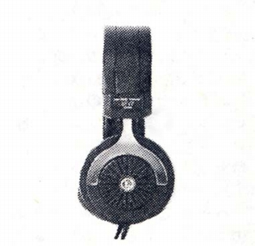
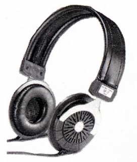

SF-7ST


■価格 4,500円■型式 特殊ダイナミック型オープンエアタイプ■振動板 平面駆動SFDエレメント■インピーダンス 32Ω■再生周波数帯域 20-40,000Hz■許容入力 ■感度 96ｄB/SPL■コード ■重量 185g（コード含まず）■発売 1978年9月■販売終了 1989年頃■備考 仕上げは黒と銀 他に120Ωで茶とゴールド仕上げのSF-7DX(5,500円）あり
サワフジのインデックスへ